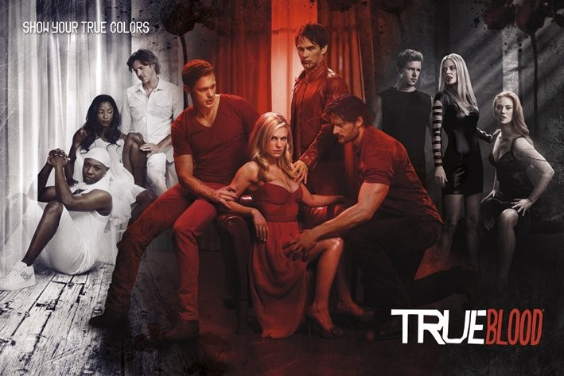

True Blood is an HBO supernatural drama series that aired from 2008 to 2014, based on Charlaine Harris's Southern Vampire Mysteries book series. Set in the fictional small town of Bon Temps, Louisiana, the show follows Sookie Stackhouse, a telepathic waitress who falls in love with 173-year-old vampire Bill Compton. The story takes place in a world where vampires have "come out of the coffin" after the invention of a synthetic blood substitute called Tru Blood, allowing them to coexist — at least in theory — with humans.
Created By: Danelle Canty